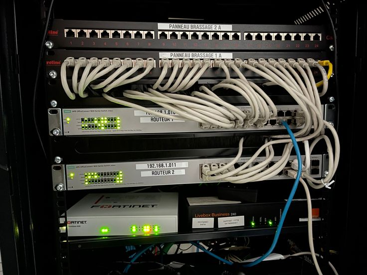

Who I Am
Driven by Technology
I hold a Bachelor's Degree in Information Systems and Technology from Makerere University with a major in Security. With over 2 years of relative experience in IT Operations and Infrastructure, I bring both the theory and the hands-on practice.
My work spans IT & network support, global end-user support, system administration, and technology assistance across organizations in Uganda and Kenya including Stromme Foundation, Osela Technologies, and Tier Data Limited.
What Defines Me
Core Strengths

Infrastructure & Networking
Hands-on experience designing, managing, and troubleshooting ICT infrastructure and enterprise networks across multiple organisations.
Cybersecurity & Auditing
Certified ISO 27001 Lead Auditor and Fortinet Cybersecurity Associate with a strong foundation in information security frameworks and practices.
End-User IT Support
Delivered global end-user support and system administration for international NGOs and technology companies, ensuring operational continuity.
Academic Background